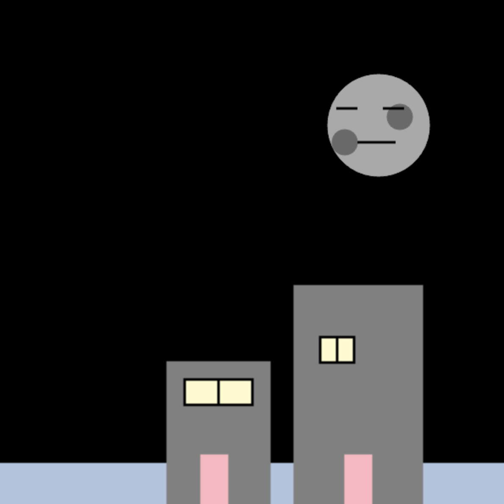
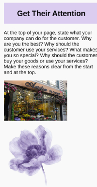
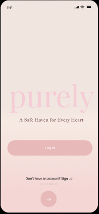

Line Activity

In this project, the goal was to create a shape/design using lines and coordinates in Trinket. One challenge was figuring out the coordinates for placing the lines accurately. However, during the process, I discovered a helpful feature in Trinket that shows the coordinates when hovering the mouse over the screen. This proved to be a valuable tool for understanding and implementing the correct coordinates. Despite the initial challenge of determining the coordinates, the coding itself was clear and concise. I learned about the strokeWeight and stroke functions, which are used to control line thickness and color. Overall, this project helped me explore creating things on platforms different from the ones I am used to.
Draw A House

In this project, the task was to create a house using shapes and colors. The focus of learning was on how to manipulate different shapes, layer them, and apply colors to bring a visual concept to life through code. One challenge I encountered was working with coordinates, as it often involved rounding and estimation, making the process time-consuming, especially when adjusting the placement of elements. The code for the project generates various shapes to form a house, tree, snowman, and background. I used different polygons, circles, and lines to achieve the desired image. One key takeaway from the project was gaining experience in creating complex designs through the strategic use of shapes and colors. Despite the initial struggle with coordinates, this project enhanced my understanding of combining creativity with coding, emphasizing the importance of patience when working with shapes and coordinates to achieve visually appealing results.
Animation

In this project, I created an animation using SimpleGUI that alternates between a sun and a moon, simulating a day-night cycle. The animation includes various elements such as a stick figure, a balloon, clouds, buildings, and changing backgrounds to represent different times of the day. The sun is drawn with multiple shapes to represent its features, including a smile, eyes, blush, and a playful appearance. It moves horizontally from left to right, creating the illusion of sunrise. The moon, on the other hand, has craters, eyes, and a mouth. It also moves horizontally from right to left, signaling the transition to nighttime. The background color changes during the animation to signify different phases of the day. This project provided valuable experience in creating an animation, as it was my first time working on something like this. I initially had difficulty understanding the logic behind making the objects move. However, once I was able to troubleshoot and experiment with different approaches, I found a way to get the shapes to move as I wanted, bringing the animation to life.
Links Review
In this project, we focused on understanding and applying relative and absolute links, with relative links directing users to locations within the same website and absolute links connecting to external sites. This activity helped us revisit HTML fundamentals and strengthened essential skills that will be crucial in future projects. I faced some challenges getting back into HTML since I hadn’t worked on a project in a while, but I overcame this by using W3Schools for guidance.
Images & Positioning Activity

For this activity, we were provided with CSS and a sample image of a webpage. Our task was to match the HTML with the CSS to replicate the design accurately. This exercise was especially valuable because it pushed us to think critically about how each HTML element corresponds to specific CSS properties in order to achieve the intended look. I struggled a bit with ensuring that all the HTML matched up with the CSS, but I overcame this by focusing more carefully on the details.
Congressional App Challenge

In this app challenge, my partner and I chose to focus on an issue that is deeply important to us: women's wellness. We developed an app called Purely, designed specifically to address this critical topic. Our goal was to create a supportive community where girls and women could feel safe, heard, and empowered to share their experiences. Through Purely, users can access resources, connect with one another, and engage in meaningful discussions about wellness. We faced challenges in ensuring that we created something we were proud of and that would genuinely be helpful, but we worked through these challenges by continually discussing our ideas and refining our approach.
Loved Pets Animal Shelter
.png)
In this project, we were tasked with creating a website for an animal shelter based on the specific needs and preferences of our client. Throughout the process, I learned various techniques for styling web pages, from layout design to using different CSS properties to create an appealing user experience. The project was a lot of fun, and I really enjoyed bringing the shelter’s vision to life. One challenge I faced, however, was selecting a color scheme I'm usually drawn to pink and more feminine designs, so it was tricky to create a palette that felt fitting for the shelter while still reflecting my personal style. Despite this, it was a great learning experience and a rewarding project overall.